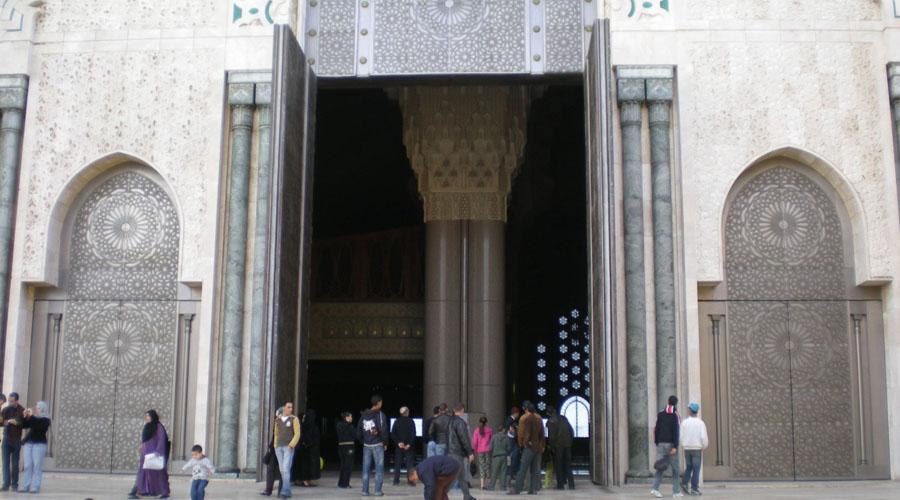
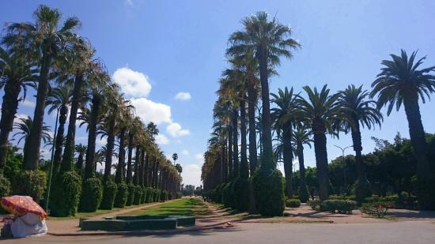
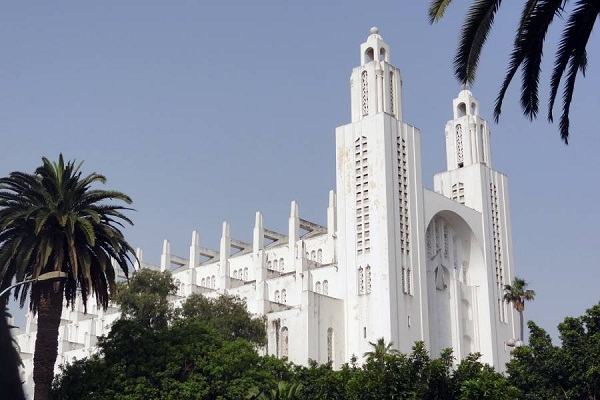

Hassan II Mosque

Hassan II Mosque is not only a technological challenge, a challenge to all levels hitherto known, the strength of materials, the balance of masses and volumes. She offered the widest field of creation never given the talent of thousands of artisans marocains. Subtil game of shadows and lights, edges and hollow, curly or calligraphy, niches, arches, as many which forms the fragile plaster a noble material as the solid marble and pose in terms of the visitor the mystery of the eternal question of artiste.
A tour cost 10 euros.
Website
The Parc de la Ligue Arabe
 
This is Casablanca's largest public park. On its edge is the Casablanca Cathedral. It is no longer in use for religious purposes, but it is open to visitors and a splendid example of Mauresque architecture.
Marabout de Sidi Abderrahmane

A popular site among locals is the small island Marabout de Sidi Abderrahmane. It is possible to walk across to the rocky island at low tide. This outcrop contains the tomb of Sidi Abderrhamane Thaalibi, a Sufi from Baghdad and the founder of Algiers
More Info